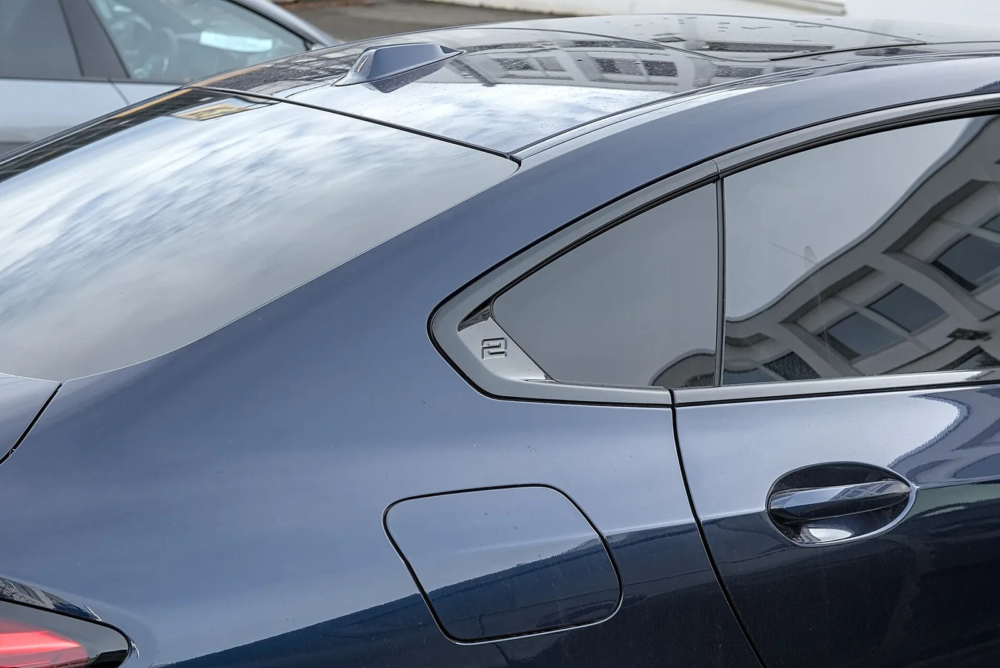
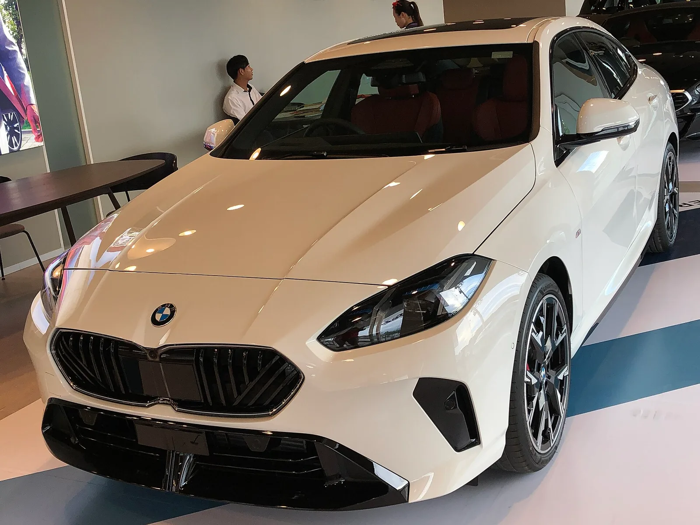
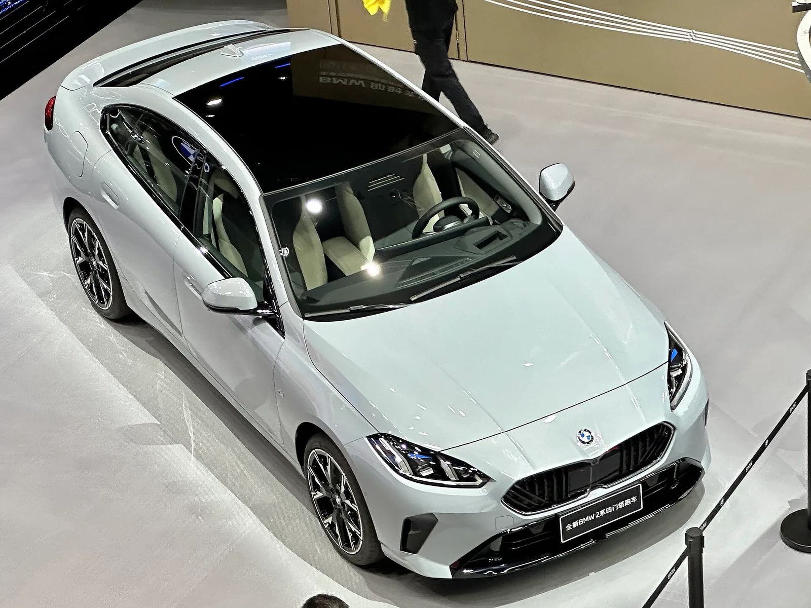

▲ 2세대 2시리즈 그란쿠페(F74). 220i의 국내 시작가는 4,900만 원이다
BMW를 가장 싸게 사는 길이 2시리즈 그란쿠페입니다.
220i 스포츠가 4,900만 원입니다.
그런데 이 차의 엔진은 3기통입니다. 1.5리터에 48V를 얹어 170마력을 냅니다. 이 조합을 두고 반응이 갈립니다.
1. 가격표
| 모델 | 트림 | 가격 |
|---|---|---|
| 그란쿠페 (F74) | 220i 스포츠 | 4,900만 원 |
| 220i M 스포츠 패키지 | 5,150만 원 | |
| 그란쿠페 (디젤) | 220d 어드밴티지 | 4,490만 원 |
| 220d 럭셔리 | 4,760만 원 | |
| 액티브 투어러 | 220i 럭셔리 | 5,080만 원 |
| 220i M 스포츠 디자인 | 5,240만 원 |
그란쿠페가 액티브 투어러보다 쌉니다. 두 차는 성격이 완전히 다릅니다. 그란쿠페는 4도어 쿠페형 세단, 액티브 투어러는 MPV입니다.
그리고 디젤이 가솔린보다 쌉니다. 220d 어드밴티지가 4,490만 원으로 220i 스포츠보다 410만 원 낮습니다. 220d는 2.0L 4기통 163마력으로, 배기량과 기통 수는 오히려 위입니다.

▲ 가솔린과 디젤 모두 48V 마일드 하이브리드가 기본이다 ⓒ Wikimedia Commons
2. 3기통이라는 논점
220i 그란쿠페의 엔진은 1.5리터 3기통 터보입니다. 여기에 48V 마일드 하이브리드가 기본으로 붙어 170마력을 냅니다.
📍 "BMW인데 3기통"이라는 반응
BMW는 오랫동안 직렬 6기통으로 알려진 브랜드입니다. 그 브랜드의 5,000만 원짜리 차에 3기통이 들어간다는 사실이 저항감을 만듭니다. 다만 이건 BMW만의 일은 아닙니다. 배출가스 규제와 원가 압박 아래 유럽 브랜드 대부분이 엔트리 라인에서 기통 수를 줄였습니다.
실제 주행에서 3기통의 약점은 진동과 소리입니다. 홀수 기통은 구조적으로 진동 상쇄가 불리합니다. 48V 마일드 하이브리드는 이 부분을 일부 보완합니다. 시동과 정지가 부드러워지고, 저속 토크를 모터가 메워주기 때문입니다.
3. 크기 — 아반떼와 비교하면
| 항목 | 수치 |
|---|---|
| 전장 | 4,551mm |
| 전폭 | 1,800mm |
| 전고 | 1,445mm |
| 휠베이스 | 2,670mm |
준중형 세단의 몸집입니다. 국산 준중형과 비슷한 크기에 5,000만 원이라는 점이 "아반떼 급에 5천을 태우냐"는 반응이 나오는 배경입니다.
다만 이 비교에는 빠진 것이 있습니다. 그란쿠페는 실용성을 우선한 차가 아닙니다. 쿠페형 루프라인 탓에 뒷좌석 헤드룸과 트렁크 개구부에서 손해를 봅니다. 같은 크기의 일반 세단보다 공간이 좁습니다.

▲ 쿠페형 루프라인은 실용성보다 형태를 택한 결과다 ⓒ Wikimedia Commons
4. 그럼 왜 사나
이 차의 값은 성능이나 공간이 아니라 다른 데서 나옵니다.
| 이유 | 내용 |
|---|---|
| 진입 가격 | BMW 라인업에서 가장 낮은 구간 |
| 형태 | 4도어 쿠페 실루엣 — 같은 값에 흔치 않다 |
| 브랜드 | 키와 그릴이 주는 것 |
| 편의 사양 | 최신 인포테인먼트와 주행보조가 그대로 들어간다 |
즉 이 차는 스펙 대비 가치가 아니라, 브랜드 진입 비용으로 이해하는 편이 정확합니다. 그 값을 어떻게 볼지는 사는 사람의 판단입니다.
5. 벤츠 CLA와의 구도
2시리즈 그란쿠페는 처음부터 CLA를 겨냥해 나온 차입니다. 컴팩트 4도어 쿠페라는 자리를 CLA가 먼저 열었기 때문입니다.
다만 지금의 구도는 달라지고 있습니다. CLA는 전동화 쪽으로 무게를 옮겼고, 2시리즈 그란쿠페는 내연기관에 48V를 얹은 구성을 유지하고 있습니다. 같은 세그먼트지만 파워트레인 전략이 갈린 상태입니다.

▲ 컴팩트 4도어 쿠페라는 자리를 두고 CLA와 겨룬다 ⓒ Wikimedia Commons
6. 계약 전에 확인할 것
✅ 이 가격대 수입차를 볼 때
· 3기통 진동은 시승에서 직접 확인 — 공회전과 저속에서 다릅니다
· 뒷좌석 헤드룸 — 쿠페형 루프라인의 대가입니다
· 프로모션 — BMW는 월별 할인 폭이 큰 편입니다
· 보증과 소모품 조건 — 수입차 유지비의 실질은 여기서 갈립니다
· 구동 방식 — 트림에 따라 전륜과 사륜이 나뉩니다
7. 정리
BMW 220i 그란쿠페의 국내 시작가는 4,900만 원입니다. M 스포츠 패키지는 5,150만 원이고, 성격이 다른 액티브 투어러는 5,080만~5,240만 원입니다.
엔진은 1.5리터 3기통 터보에 48V 마일드 하이브리드를 더한 170마력입니다. "BMW인데 3기통"이라는 저항이 있지만, 유럽 브랜드 엔트리 라인의 공통된 흐름입니다.
전장 4,551mm로 국산 준중형과 비슷한 몸집입니다. 이 차의 값은 성능이나 공간이 아니라 브랜드 진입 비용으로 이해해야 계산이 맞습니다.